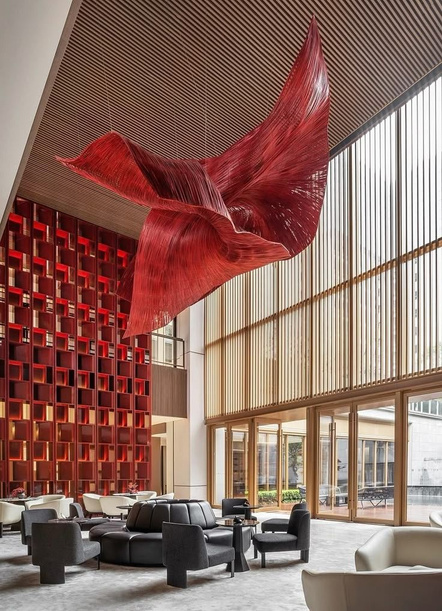
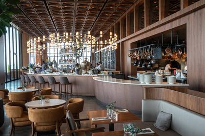
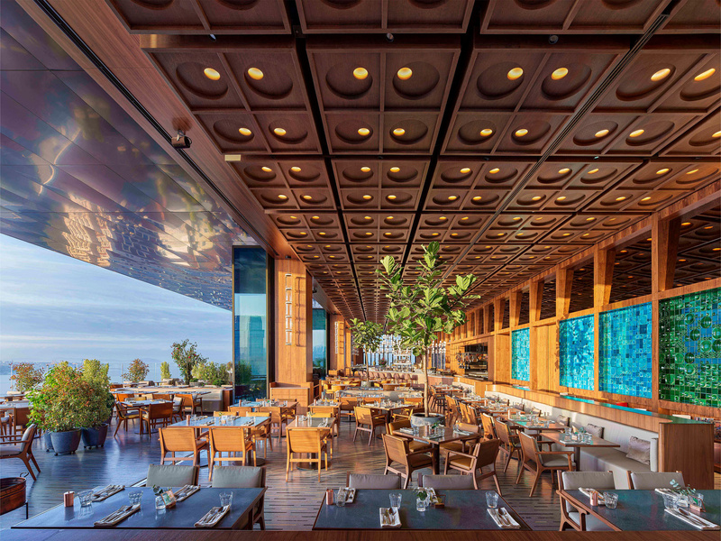
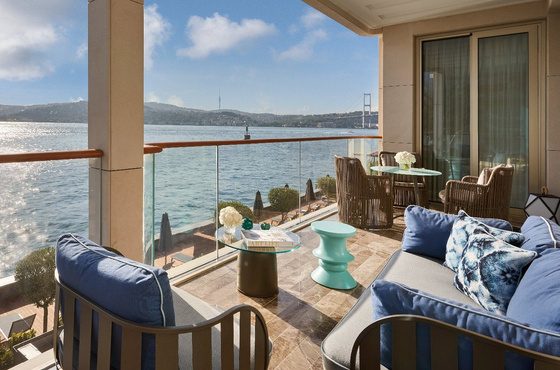
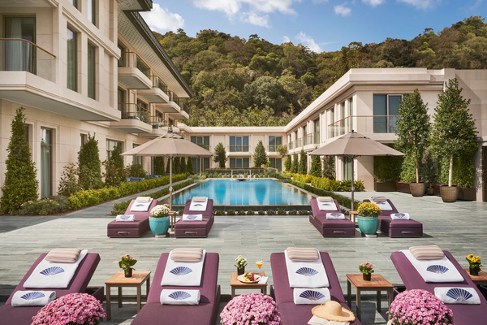

Marin Otel & Restaurant, Samsun'un en canlı bölgesi olan Atakum ilçesinde, sahil bandında ve doğrudan deniz cepheli bir konumda yer alan butik otel projesidir. Mimari proje tamamlanmış olup, iç mimari tasarım ve uygulama projesi hizmeti için teklif alınmaktadır.
| PROJE ADI | Marin Otel & Restaurant |
| İŞVEREN | Polfisan Kent Mobilyaları (polfisan.com.tr) |
| KONUM | Samsun, Atakum — Sahil bandı, deniz cepheli Haritada Gör → |
| TAPU ALANI | 3.032 m² (~50 x 60 m) |
| TOPLAM İNŞAAT ALANI | 11.523 m² |
| KAT ADEDİ | Toplam 6 kat (1. bodrum, 2. bodrum, zemin kat ve 3 yatak katı) |
| MİMARİ PROJE | Tamamlanmış — iç mimari ofise sağlanacaktır |
| YATAK ODALARI | 77 oda |
| ALAKART RESTORAN | ~300 kişi kapasiteli (kapalı 100–120 + teras 150–180) |
| VIP YEMEK SALONU | ~40 kişi kapasiteli ayrı salon |
| BİSTRO & BAR | ~60 kişi kapasiteli |
| TOPLANTI SALONLARI | 3 adet (farklı düzenlere uyumlu) |
| SPA & HAVUZ | Otel misafirleri odaklı |
Aşağıda tanımlanan tasarım yönelimi, proje sahibinin belirlediği atmosfer ve malzeme tercihlerini özetlemektedir. Bu çerçeve nihai tasarım kararı niteliğinde olmayıp, konsept çalışmasına yön verecek bir başlangıç noktasıdır.
Samsun; Karadeniz'de bulunan bir şehir olmasına rağmen bir Rize, Trabzon kadar da "Karadeniz" değildir. Daha kozmopolit ve modern bir şehir yapısına sahiptir. Dolayısıyla yöreselliğe aşırı bağlı bir tasarımdan ziyade modern ve evrensel bir tasarım dili beklenmektedir.
Otel, şehir oteli mantığında çalışacaktır. Fakat klasik bir şehir oteli veya franchise otel binası gibi durmamalıdır. Otelde butik hava hissedilmeli.
Günümüzün trendi olan malzeme seçimleri yerine zamansız, eskimeyen ve bağırmayan bir tarzla görsellik sağlanmalıdır. Şatafata kayan çarpıcı bir lüks istemiyoruz. Lüksü hissettiren, zerafete sahip bir tasarım beklentisi içerisindeyiz.
Samsun'un kültürel ve coğrafik kodları baz alınarak otel genelinde sanatsal çalışmalara yer verilmeli. Örneğin dünyaca bilinen "Samsun'un kuş çeşitliliği" ilham alınarak lobi alanında kuşlarla ilgili bir enstalasyon tasarlanabilir.
Restoran ve lobi alanlarında ikonik odak ürünlere (aydınlatma vb.) yer verilmeli. Genel alanlarda (özellikle restoran ve lobi) akustik çözümler dekoratif olarak ele alınmalıdır.
| Mandarin Oriental Hotel | İstanbul, Kuruçeşme |
| Peninsula Hotel | İstanbul, Karaköy |
| Biz İstanbul | Taksim, AKM |
| Tarihi Liman Lokantası | İstanbul, Galataport |
| Sait | İstanbul, Galataport |
| Fiko | İstanbul, Yeniköy |
| Sunset Grill & Bar | İstanbul, Etiler |

Referans atmosfer: İkonik sanatsal enstalasyon, çift yükseklik lobi, doğal malzeme ve sofistike karakter
İç mimari tasarım hizmeti kapsamında yer alan mekan birimleri ve her birim için beklenen tasarım yaklaşımı aşağıda tanımlanmıştır.
Yapının karşılama mekanı. Resepsiyon bankosunun yanı sıra bekleme/oturma grubu, bagaj alanı ve concierge fonksiyonlarını barındırır. Restoran alanına görsel ve mekansal geçişkenlik sağlanmalıdır.
Mevcut restoranımız günümüzde Samsun halkının yoğunlukla geldiği, orta-üst kitleye hitap eden ve Samsun ölçeğinde premium restoran konumundadır. Yeni projede de otel dışından kullanım daha ağırlıklı olacaktır. Dolayısıyla yapılacak iç mimari, geleneksel "otel restoranı" tekdüzeliğinde değil, bölge insanını rahatlıkla içine çekecek şık bir tasarıma sahip olmalıdır.


Referans atmosfer: Açık mutfak, bar tezgahı, ahşap tavan detayı, premium restoran karakteri
30–40 kişilik gruplara servis verilecek, ana restorandan ayrı bir salon. Özel davetler, iş yemekleri ve grup rezervasyonları için kullanılacaktır.
Bistro-bar konseptinde düşünülen bu mekan, yalnızca otel misafirlerinin değil Samsun halkının da gelebileceği bir mekan olarak tasarlanmalıdır. Restoran gibi büyük bir gelir hedefinde değiliz — otelimize katacağı marka değerinin daha önemli olduğunu düşünüyoruz.
3 yatak katında toplam 77 oda. Her oda tipi için ayrı tasarım çalışması beklenmektedir. Banyolar oda tasarımının ayrılmaz parçası olarak ele alınmalıdır.


Referans atmosfer: Deniz cepheli teras, havuz alanı, premium dış mekan karakteri
Kat holleri, koridorlar, asansör kabinleri, merdiven boşlukları. Bu alanlar otelin tasarım dilini katlara taşıyan geçiş mekanlarıdır.
3 adet toplantı salonu olup, farklı ihtiyaçlar doğrultusunda (U düzeni, tiyatro düzeni vb.) tefrişat yapılmalıdır. Esnek mobilya düzeni ve teknik altyapı beklenmektedir.
Dışarıdan kullanımı hedefleyen özel kulüp mantığında çalışmayacaktır. Daha çok otel misafirleri için memnuniyet artırıcı ve otel doluluğuna katkı yapacak bir aktivite olarak düşünülmektedir.
Aşağıdaki hizmet kalemleri için ayrı ayrı fiyatlandırma talep edilmektedir.
| KALEM | KAPSAM | DURUM |
|---|---|---|
| A) Konsept Tasarım | Konsept paftaları, malzeme ve renk paleti, mekan kurgusu diyagramları, konsept 3D görseller (her birim için minimum 2 görsel) | ZORUNLU |
| B) Uygulama Projesi | 1/50 ve 1/20 ölçekli planlar, kesitler, görünüşler; imalat detayları (1/5, 1/1); malzeme şartnameleri; elektrik/aydınlatma planları; tavan planları; döşeme planları | ZORUNLU |
| C) Uygulama Denetimi | İnşaat süresince periyodik saha ziyaretleri, malzeme numune onayları, imalat kontrolleri, montaj denetimi. Minimum ayda 2 ziyaret öngörülmektedir. | ZORUNLU |
| D) FF&E Seçimi | Mobilya, aydınlatma armatürleri, aksesuar, tekstil, sanat eseri seçimi ve tedarik koordinasyonu | OPSİYONEL |
| E) Uygulama Dahil Teklif | Yukarıdaki tüm tasarım hizmetlerinin yanı sıra fiziksel uygulamayı (imalat + montaj) da içeren toplam teklif bedeli | OPSİYONEL |
Teklifin aşağıdaki kalemleri ayrı ayrı içerecek şekilde yapılandırılması beklenmektedir.
İşveren: Polfisan Kent Mobilyaları (polfisan.com.tr)
Proje: Marin Otel & Restaurant
İletişim: Ercan Karamangil — +90 537 847 96 22
Konum: Samsun, Atakum — Haritada Gör
Marin Otel & Restaurant — İç Mimari Tasarım Özeti — Nisan 2026